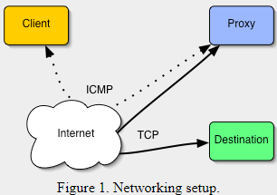

How it works
This is a technical description of how ptunnel works. If you're not interested in low-level networking details, you can skip this section. It might help to read it either way, as it provides some insights into the situations where ptunnel doesn't work. Ptunnel works by tunneling TCP connections over ICMP packets. In the following, we will talk about the proxy, the client and the destination. The proxy is the "endpoint" for our ping packets, i.e. the computer that we send the ping packets to. The client is the computer we're trying to surf the net from, and the destination is the computer we would normally be trying to access over TCP (such as a web site or an ssh server somewhere).
So, in order to accomplish this, we need the ability to send and receive ping packets. Many operating systems enable us to do this using so-called raw sockets. Raw sockets is the preferred mechanism for sending ICMP packets, and is used by both the proxy and the client. Unfortunately, raw sockets require root, so there is a provision for using standard datagram sockets if they are supported by the operating system (Mac OS X 10.2 or later supports this, but Linux systems will require root either way). Ptunnel supports this, however it is not recommended for actual use. We'll get back to the reason later.
The client will perform all its communications using ICMP echo request (ping) packets (type 8), whereas the proxy will use echo reply packets (type 0). In theory, it is possible to have the proxy also use echo request packets (and thus make it operate without root), but these packets are not necessarily forwarded to the client beyond the host network, so they are not used.
